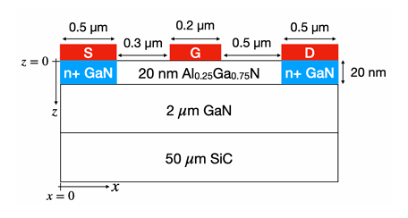
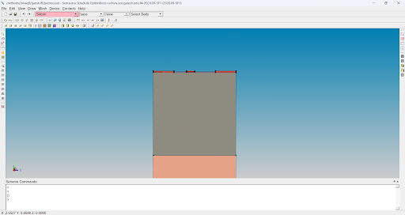
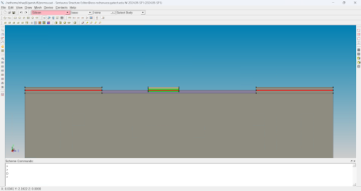

GaN HEMT TCAD Simulation
Georgia Tech ECE 1100 Discovery Project | Spring 2026
Project Idea and Background
GaN HEMTs are semiconductor devices that have applications in high power and high frequency electronics:
- Bandgap: Energy needed to move electrons. High bandgap allows for reliability with high voltage and temperature.
- Electron Mobility: How fast an electron can move. High mobility for high frequency (fast switching).
- Essentially a high speed switch: ideal for fast chargers, electric vehicles, RF amplifiers, and 5G technology.
- Breaks devices into mesh elements
- Iteratively solves partial differential equations to simulate fabrication/performance
- Saves large amounts of time and money to test new technology.
Because TCAD is such a complicated software, I made it a goal to familiarize myself with it before I started my internship in the summer. My professor suggested that I replicate one of his papers in order to learn the software. The general idea of this paper is to compare the results of two different equation solvers to study energy transport in GaN HEMTs.
Project Progress
The general workflow for device simulation is:
- Define geometry and contacts
- Complete doping and meshing
- Run simulation

Contacts in this case represent places where the device interacts with electrical terminals: source, gate, and drain. I added these where the original diagram specified. These contacts are indicated by the red lines as shown below.


The final step before running simulation was to create a mesh. This turns the high level geometry into smaller shapes that make it easier for the simulator to solve equations. I had to apply a fine mesh at the interface of the gate and the AlGaN layer, because this region is where the most change would occur. A finer mesh provides more accurate simulation. I attempted to run a DC simulation to get the IV characteristics of the HEMT. Unfortunately, I was met with some issues relating to the actual parameters of the materials within my device. The main file is not able to read the material files. This is an issue that I am currently trying to resolve. My first plan is to look at example simulations that come packaged with TCAD and see if I can replicate how they define and use material parameters. My initial test with this was unsuccessful but this is the final step to achieving a result. In order to verify that everything else was functional, I ran a simulation with a flag to ignore material issues. I was able to confirm that the simulation ran, however the method for solving equations (Newton-Raphson method) was not converging. I suspect that this is because it defaulted to the base material of silicon. Therefore, the final hurdle to overcome is the material definitions.
ECE Skill(s) Gained
This project gave me a solid understanding of how to use and navigate TCAD and what its applications are. TCAD is a very useful tool for the field I want to go into (semiconductors), so it is great to learn it early. I will need it for the lab I am joining this fall, so I will continue to develop this skill. I specifically focused on the SDevice module, learning how to define geometry, contacts, doping, and meshing. Through this writeup, I solidified my understanding of the workflow and also learned more about device physics. When I did the TCAD work, I was applying concepts that I didn't fully understand, just trying to get a simulation to work. By documenting my process and reflecting on it, I recognized gaps in my knowledge (like the advantages of GaN, or what source/gate/drain actually mean) and I was able to fill in some of those gaps. For example, I learned that I made a mistake during doping. I needed to use silicon instead of phosphorous.
Overall Experience
Overall, this project has been a valuable learning experience. I had never used TCAD before, but I knew it was a powerful tool in my field. I would say I am about 5% familiar with it now, and I look forward to growing more proficient at it as I will need to use it in my upcoming lab work both at MSU and GT. This has definitely reinforced my interst in my Electronic Devices thread, as I find this work to be very interesting. It also made me more interested in Signal Processing, as taking AI/ML-related classes could be useful if I want to work on EDA tools like TCAD. The next steps for me are to fix my doping error and resolve my material parameter issue to get a visual graph output after successful simulation.